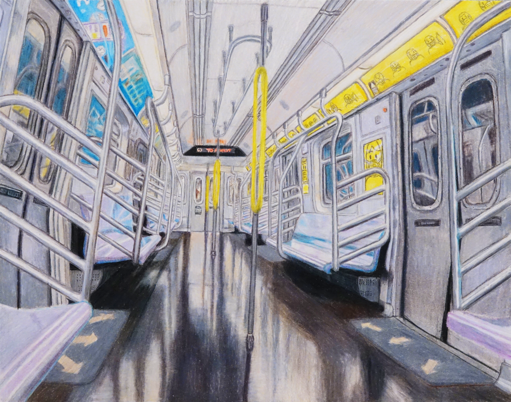

Creative Work
New York Subway Traincar

Overview
This piece is based on a photo I took of a New York Subway traincar during the COVID-19 pandemic. It is supposed to realistically capture the emptiness and uniformity of society during the pandemic.
Process / Additional Notes
Colored pencil on standard drawing paper